ヘッドウォータースのフィード
https://zenn.dev/p/headwaters
株式会社ヘッドウォータースのテックブログです。 生成AI、LLM、Azureのサービスや資格、IoT、XR系などData&AIとApp modernizeに関して幅広く投稿します！
フィード
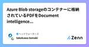
Azure Blob storageのコンテナーに格納されているPDFをDocument intelligenceでOCRする方法
ヘッドウォータースのフィード
やることAzure blob storageにPDFのドキュメントを保管しています。そのドキュメントをローカルにダウンロードせずに、Azure Document intelligenceでOCRをする方法を紹介します。 ライブラリーのインストールpip install azure-storage-blob azure-ai-formrecognizer コードmain.pyimport os from azure.storage.blob import BlobServiceClient from azure.ai.formrecognizer imp...
6時間前
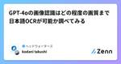
GPT-4oの画像認識はどの程度の画質まで日本語OCRが可能か調べてみる 1
1
ヘッドウォータースのフィード
執筆日2024/08/06 概要社内の案件でGPT-4oで画像認識をさせたときに案件によって「OCRの精度がめちゃくちゃいい」という報告と「全然OCR上手くいかないじゃん」という報告があったため、画質によってどの程度精度に差が出るか調べてみました。特に画数の多い漢字は、画質が低いとすぐにつぶれてしまいます。人間は文脈による推論でその漢字を予測することができますが、AIにとってはどうでしょうか。従来のCVによるOCRはつぶれた文字は確率が高い文字を出力するだけですが、VLMによるOCRはその言語処理能力によってある程度文脈に沿った文字抽出が期待できそうな気がします。またプロン...
3日前
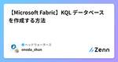
【Microsoft Fabric】KQL データベースを作成する方法
ヘッドウォータースのフィード
はじめにMictosoft Fabricの「演習: Fabric のリアルタイム インテリジェンスを探索する」を記事通りに進めることができなかったので、私のKQL データベースの作成を備忘録として残します。参考にしていた記事はこちらhttps://microsoftlearning.github.io/mslearn-fabric.ja-jp/Instructions/Labs/07-real-time-analytics.html 記事の説明Synapse Real-Time Analytics エクスペリエンス イメージを選択KQL データベースを選択ローカルフ...
5日前
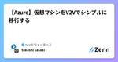
【Azure】仮想マシンをV2Vでシンプルに移行する
ヘッドウォータースのフィード
はじめに以前のプロジェクトで開発環境の仮想マシンを1台Azureに移行したことがありました。当時は必要にせまられていた為、色々なサイトを参考にさせてもらいつつ力技でやり切った記憶がありますが、改めて手順を整理してみたいと思います。 前提移行元サーバは少し古いサーバをイメージし、HyperV基盤上のWindowsServer2019を想定します。スペックは以下で構築しました。項目設定値CPU2vCPUMemory4,096MBDisk32GB (容量固定)ファイル形式VHD仮想マシン世代第一世代!Azureに移行...
5日前
AIコードエディターのCursor（カーソル）とはどんなものか使ってみた 1
ヘッドウォータースのフィード
CursorとはGitHub Copilotのように、AIがプログラミングをサポートしてくれるエディターです。機能としはコード補完やAIチャット、自動デバッグやエラーチェックがあります。VS Codeをベースに開発されたので、エディタのUIもVS Codeに瓜二つです。ですので今までずっとVS Codeを使っていたエンジニアもすぐ使いこなせます。 料金無料で使うことができますが、GPT-3.5へのリクエストは毎月200回・GPT-4には50回しか使えないようです。業務で利用する場合は月額40ドルのビジネスプランがあるので、そちらを利用します。もしくはAzure Op...
5日前
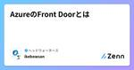
AzureのFront Doorとは
ヘッドウォータースのフィード
Azure Front Doorを使う機会があったのでまとめます。 Front DoorとはAzureが提供しているCDN（Contents Delivery Network）サービスアプリケーションのパフォーマンス向上、スケーラビリティ向上、セキュリティの信頼性を提供する機能です。要はアプリケーションが高速になって、セキュリティが安全になって、サーバーダウンのリスクを無くしてくれる（完全に0になるわけではない）サービスです。 機能 1. グローバルな負荷分散ユーザーの地理的位置に基づいてトラフィックを最適なバックエンドサーバーにルーティングすることで、低遅延で高い可...
6日前
2024 Microsoft Top Partner Engineer Awardを受賞しました！
ヘッドウォータースのフィード
初めに2024 Microsoft Top Partner Engineer AwardのAzure Categoryで受賞をしました。今回はこのTopEngineerを受賞したことについて記事にしたいと思います。https://www.microsoft.com/ja-jp/partner/jp-tpeaward2024?activetab=pivot:azuretabhttps://www.headwaters.co.jp/news/2024_microsoft_top_partner_engineer_award.html Microsoft Top Partne...
7日前
【Azure】ネットワーク閉域化のあれこれ
ヘッドウォータースのフィード
はじめにAzureのネットワークを考える際、主にセキュリティ上の理由から特定のネットワークからのみにアクセスを制限する（閉域化する）設計とすることが多いと思います。ネットワーク閉域化の有名なサービスとしてプライベートエンドポイントがありますが、同じような名前のサービスにサービスエンドポイントがあったり、プライベートリンクがあったりと、とにかくややこしい印象です。これら各サービスの違いについては、既に先人達によって語りつくされている感がありますが、自分の中の整理として記事にまとめておきたいと思います。 サービスエンドポイント当初よく分からなかったのがこのサービスエンドポイントに...
7日前
IT初心者のためのインフラ解説
ヘッドウォータースのフィード
こんにちは！株式会社ヘッドウォータースの新卒１年目の矢野と申します。最近、ITインフラについて調べる機会があったので、ITインフラについてまとめてみました！「ITインフラって何だろう？」と思っている方はこの記事を読んで、ITインフラについてのざっくりとした概要を押さえてみてください！ ITインフラとは？ITインフラ（Information Technology Infrastructure）は、組織が情報技術を活用して業務を遂行するために必要なハードウェア、ソフトウェア、ネットワーク、およびその他の技術的リソースを指します。ITインフラは、企業の効率性、生産性、および競争力を...
7日前
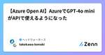
【Azure Open AI】AzureでGPT-4o miniがAPIで使えるようになった 1
ヘッドウォータースのフィード
ついに！Azure Open AI上でGPT-4o miniがAPIで使えるようになったhttps://techcommunity.microsoft.com/t5/ai-azure-ai-services-blog/openai-s-gpt-4o-mini-now-available-in-api-with-vision/ba-p/4200640 GPT-4o miniについて下記記事が参考になりました。https://zenn.dev/microsoft/articles/a901240ffa459f 前提Azure Open AI ServiceをEast ...
8日前
【Microsoft Fabric】セマンティックモデルを作成しレポートを作成する方法
ヘッドウォータースのフィード
やることLakehouseからレポートを作成しようとすると、エラーが出た。解決策がわかったので、備忘録として残します。 手順Lakehouseをクリックする新しいセマンティックモデル をクリックするモデルの名前、ワークスペース、テーブルを選択し、確認をクリックする新しいレポート をクリックする。
8日前
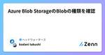
Azure Blob StorageのBlobの種類を確認
ヘッドウォータースのフィード
概要ローカルPCやオンプレサーバのファイルしか触ったことがなく、クラウドやデータベースで用いられる「BLOB」という概念に馴染みがなくちゃんと調べてみようと思いました。そもそもBLOB Storageという言葉を使ってファイルと違うことを意識させるネーミングになっているのはAzureだけで、BLOBを扱っていてもAWSやGoogle Cloudではそうはなっていないんですね。 そもそもBLOBとは「Binary Large OBject」の略で、その名の通り大量のバイナリデータを格納するためのストレージ単位となるオブジェクトです。頭文字を拾った略称なので全部大文字で書くべきな...
8日前
【読書ログ】プリンシプルオブプログラミング 1
ヘッドウォータースのフィード
こんにちは。株式会社ヘッドウォータースの新卒1年目の山尾弘大と申します！今回は「リーダブルコード」や「Webを支える技術」と一緒に購入した「プリンシプル オブ プログラミング」を読み終えたので、その感想をZennにログとして残そうと思います。 本書を読もうと思った経緯自宅に積読してあり、案件に配属される前にプログラマとしての基礎知識を学びたいと思い、読み始めました。 記事を書く目的この記事の目的は2点あります。・「プリンシプル オブ プログラミング」を読了した感想を記録し、個人的な読書ログとして残すこと。・新卒エンジニアやプログラミング未経験者に向けて、チーム開発にお...
9日前
PythonでBM25のスコアを算出してみる
ヘッドウォータースのフィード
やることフルテキスト検索で使われるBM25のスコアをPythonで求める 背景AI Searchには様々なドキュメント検索の手法があり、代表的なものとしてフルテキスト検索があります。フルテキスト検索ではtf-idfを発展させたBM25というアルゴリズムが使われています。 参考記事マイクロソフトの公式に説明があります。https://learn.microsoft.com/ja-jp/azure/search/index-ranking-similarity 理論BM25の数式は一見難解ですが以下の記事がわかりやすかったです。https://qiita.com/...
9日前
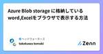
Azure Blob storage に格納しているword,Excelをブラウザで表示する方法
ヘッドウォータースのフィード
やることAzure blob storageに入っているExcelファイルをブラウザで表示したい。BlobのURLを実行すると、word,excelファイルがダウンロードされてしまう。解決方法の一例を備忘録として残します。 参考資料https://learn.microsoft.com/ja-jp/office/troubleshoot/administration/test-viewing-documents-by-using-office-online-server-viewer 前提Azure Blob StorageにのExcel,wordファイルがあるこ...
9日前
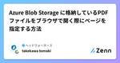
Azure Blob Storage に格納しているPDFファイルをブラウザで開く際にページを指定する方法
ヘッドウォータースのフィード
やることAzure Blob StorageにPDFファイルを格納しています。そのファイルをブラウザで開く際に、特定のページを指定して開く方法を備忘録として残します。（すごい簡単だった...Webエンジニアじゃないからこういうのわからない....） 前提Azure Blob Storageに2ページ以上のPDFファイルがあること匿名アクセスを有効にするコンテナーへのアクセスレベルを「コンテナー（コンテナーとBLOBの匿名読み取りアクセス）」に設定 結論#page=x(xはページ） をURLに付与するhttps://<blob名>.blo...
9日前
これだけは知っておきたい！デバイス購入時の重要なポイント
ヘッドウォータースのフィード
はじめにみなさんはデバイスを購入する際、何を買えばよいか、どこで買うべきかなど迷ったことはありませんか？この記事では、デバイスの購入時に共通する重要ポイントについて説明します。 デバイス購入時の重要なポイント どこで買うべきか？デバイスを購入する際、購入場所の選択はとても重要であり、購入場所としては大きく2つに分類されます。 1.オンラインサイトで購入最近は手軽に購入できるなどの理由でオンラインサイトを利用される方も多いとは思いますが、オンラインサイトで購入する際は以下のメリット・デメリットがあります。 メリット価格: 多くの店舗が競争しているため、比較...
9日前
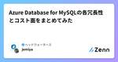
Azure Database for MySQLの各冗長性とコスト面をまとめてみた
ヘッドウォータースのフィード
はじめにAzure Database for MySQLの各冗長性とコスト面をまとめてみましたので、それを共有します！※新情報が入り次第、更新します。 冗長性の種類 自動バックアップ（ローカル冗長バックアップストレージ） 特徴障害が起きた際に使用を特定の時点に復元するために使用できる自動サーバー バックアップを構成するものです。バックアップがローカル冗長バックアップ ストレージに格納されている場合、バックアップのコピーが同じデータセンターに複数格納されます。 このオプションは、サーバーラックとドライブの障害からデータを保護します。 メリット運用コストは1番安く...
9日前
【Azure】Azure CLIを使い、コンテナー配下のファイル名をすべて出力する方法
ヘッドウォータースのフィード
やることAzure CLIでコンテナー配下のドキュメント一覧を取得する方法を備忘録として残します。 コマンドaz login -t "テナントID"az storage blob list --account-name "ストレージアカウント名" --container-name "コンテナー名" --account-key "ストレージアカウントキー" --query [].name --output tsv パラメータ取得方法 テナントID検索欄で「Microsoft Entra ID」と検索し、「Microsoft Entra ID」をクリックする...
9日前
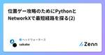
位置ゲー攻略のためにPythonとNetworkXで最短経路を探る(2)
ヘッドウォータースのフィード
前回前回、駅メモというゲームのために最短経路問題に取り組みましたが、18きっぷ旅用の出力になってしまいました。今回はこの新幹線使わない問題の改善と、エッジの重みの設定、表示の簡略化を行います。 新幹線使わない問題前回、横浜駅から鳥取駅までの経路を検索すると、最短経路（駅名）: 横浜 -> 戸塚 -> 大船 -> 藤沢 -> 辻堂 -> 茅ケ崎 -> 平塚 -> 大磯 ->二宮 -> 国府津 -> 鴨宮 -> 小田原 -> 早川 -> 根府川 -> 真鶴 -> 湯河原 -> 熱...
9日前